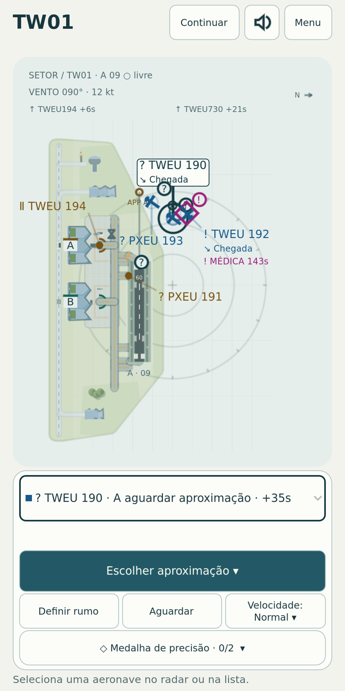
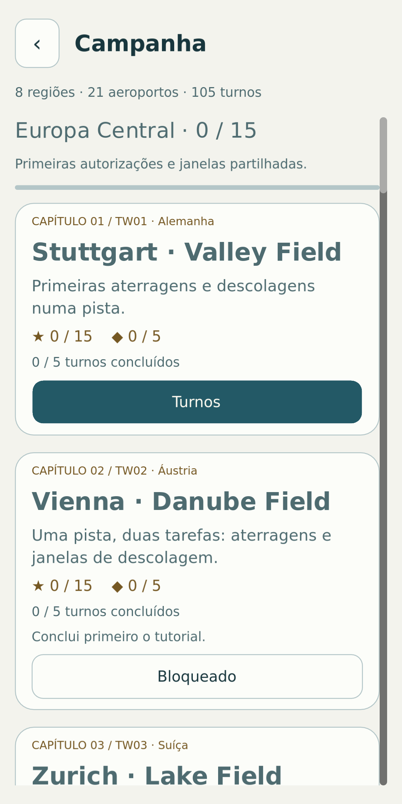
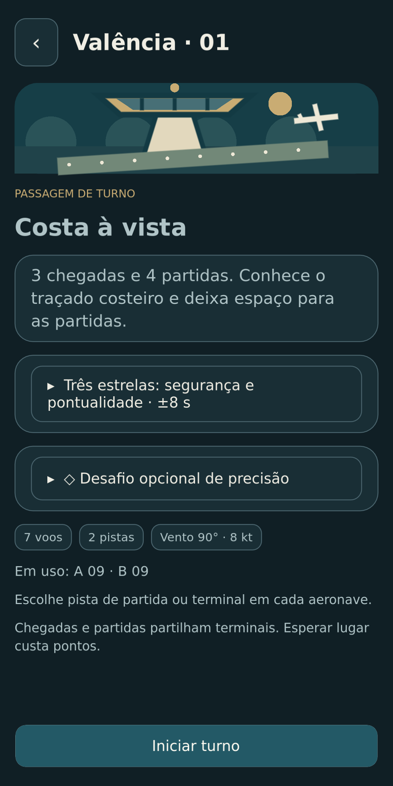

Já disponível para Android
tøwer
A tua torre. O teu espaço aéreo.
Mais uma aterragem, depois a próxima descolagem: no tøwer, és tu que controlas o tráfego aéreo. Dá instruções claras e leva cada avião em segurança ao destino, numa viagem de aeroporto em aeroporto.
Conhece o tøwer por dentro



Um novo desafio a cada turno
Coordena descolagens e aterragens
Planeia rotas, ajusta a direção e a velocidade e escolhe o momento certo para a próxima autorização.
Uma viagem pelo mundo
Descobre aeroportos com diferentes configurações de pistas. Cada novo destino convida-te a pensar mais à frente.
Mantém a calma no meio do tráfego
Com mais aviões e condições que mudam, o momento de agir faz toda a diferença. Mantém-te atento e supera turnos cada vez mais exigentes.
A postos para o primeiro turno?
O tøwer está disponível gratuitamente no Google Play para Android. O jogo contém anúncios, que podes remover definitivamente com uma compra única.